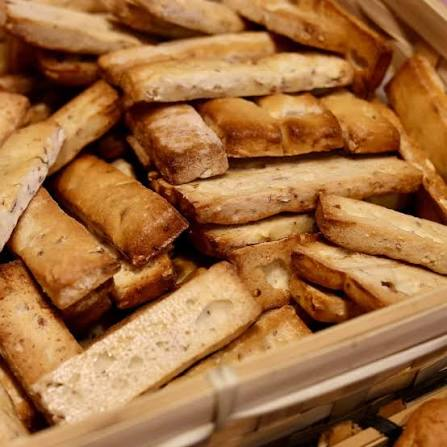

Croquants
Villaret


⟹ Produits d'Exception ⟸
En 1775, Claude Villaret fonde à Nîmes une boulangerie rue de la Madeleine, alors appelée rue des Barquettes, où il fabrique pain au levain et gâteaux à la fleur d'oranger dans la pure tradition provençale. Deux siècles et demi plus tard, la Maison Villaret demeure l'un des plus anciens commerces nîmois toujours en activité.
C'est son fils Jules Villaret qui met au point, quelques décennies plus tard, la recette du croquant : un biscuit sec aux amandes brisées, parfumé au citron et à la fleur d'oranger. L'anecdote fondatrice veut qu'à une époque où la pièce permettant de rendre la monnaie sur un demi-sou n'existait pas, Jules ait eu l'idée de rendre la différence... en croquants.

Ce geste commercial ingénieux transforme peu à peu le biscuit en véritable spécialité locale, au même titre que les caladons, les fougassettes ou les minerves qui composent le répertoire sucré nîmois. Le croquant connaît son plein essor à la fin du XIXe siècle, porté par la réputation grandissante de la Maison Villaret.
Depuis 1775, le croquant est cuit dans le même établissement de la rue de la Madeleine, à l'angle de la rue de l'Aspic, en plein cœur de l'Écusson nîmois. La recette précise, tenue secrète, se transmet de génération en génération : de Claude à Jules, puis à Paul Villaret, avant que la maison ne change de mains — reprise par la famille Recolin, puis depuis 1987 par la fratrie Brayde, aujourd'hui incarnée par Marion, Benoît et Rémi.
En 2025, la Maison Villaret a célébré ses 250 ans d'existence, marquant l'anniversaire par une grande dégustation publique place de l'Horloge, où boulangers et pâtissiers ont préparé croquants, minerves et caladons devant les Nîmois, perpétuant un rituel de transmission entamé plus de deux siècles plus tôt.
Le croquant Villaret — biscuit très sec, à laisser fondre lentement en bouche pour en apprécier toute la saveur d'amande — demeure aujourd'hui l'un des souvenirs gourmands les plus emblématiques de Nîmes, vendu en boîtes traditionnelles dans la boutique historique comme aux Halles de la ville.
Bâton de maréchal : biscuit allongé également créé par la maison, apprécié au petit-déjeuner comme au goûter.
Minerves : petits biscuits secs nîmois qui accompagnent traditionnellement le croquant dans les boîtes de spécialités locales.
Caladons : biscuit en forme de croissant, aux amandes et au miel, autre incontournable de la pâtisserie nîmoise traditionnelle.
Le croquant Villaret se déguste avant tout à sa source, dans la boutique historique du cœur de Nîmes.
La Maison Villaret, 13 rue de la Madeleine à Nîmes, boutique historique fondée en 1775, dont la devanture en bois à l'ancienne accueille toujours boulangerie, pâtisserie et salon de thé.
Les Halles de Nîmes, où le croquant Villaret figure parmi les douceurs traditionnelles proposées aux côtés des produits du terroir gardois.
Les épiceries fines nîmoises de l'Écusson, qui proposent les croquants en coffrets souvenirs, aux côtés d'autres spécialités locales comme la brandade ou l'anchoïade.